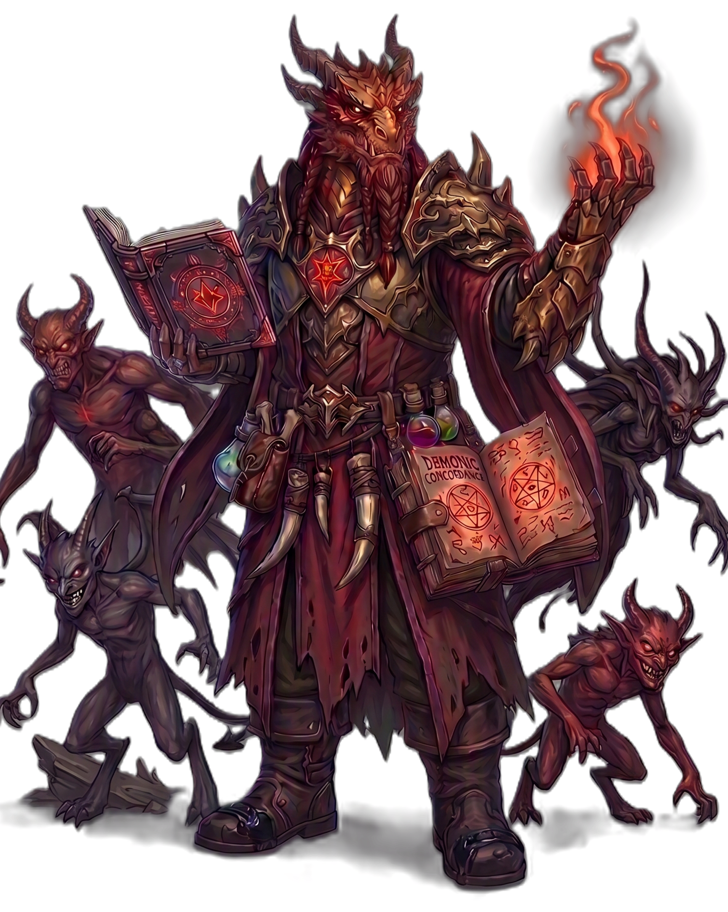

| Rolle | Vollzauberer · Flammen-Schaden · Fluch-Spezialist · Beschwörer · Kontrolle |
| Zauberertyp | Vollzauberer Zauberslots bis Rang 9 |
| Primärer Schadensattribut | Charisma (CHA) — Dämonischer Pakt |
| Sekundärer Schadensattribut | Weisheit (WIS) — Zauberattribut |
| Zauberattribut | Weisheit (WIS) |
| TP (L1) | 8 |
| TP pro Level | 5 |
| Rüstung | Leichte Rüstung |
| Waffen | Magierwaffen — Dolche, Stäbe, Zauberstäbe, Bücher |
| Rettungswürfe | Weisheit (WIS), Charisma (CHA) |
| Attributsteigerung (Level) | 4, 8, 12, 16 |
| Fertigkeiten (2 zur Auswahl) | Geisteskunde, Einschüchtern, Religion, Wahrnehmung, Nachforschung |
Der DAEMONENRUFER ist der Binder von Dämonen — er ruft Höllenfeuer herbei, verflucht seine Feinde und beschwört Dämonen als Begleiter. Weisheit treibt seine Zauber, Charisma seinen Dämonischen Pakt (L1: +CHA-Modifikator Schaden gegen verfluchte/verängstigte Ziele). Seine Zauber fügen FLAMME und SCHATTEN-Schaden zu: Höllenfeuer (2W6 FLAMME), Schattenschlag (3W6 SCHATTEN), Verdammnis (verängstigt), Höllensturm (6W6+6W6 Flächeneffekt), Inferno (10W6 + Schaden über Zeit). Seine Fluch-Spezialität ist einzigartig: Brennender Fluch (L6) lässt jeden Fluch-Zauber zusätzlich 1W4 FLAMME-Schaden über Zeit auslösen, Explosiver Fluch (L14) lässt verfluchte Ziele bei Tod explodieren (8W6 FLAMME). Dämonenbeschwörung (L5) ruft einen Imp, Daemonische Verbesserung (L10) gibt beschworenen Dämonen +2 TP pro Level. Höllischer Gegenangriff (L2) ist eine Reaktion die Angreifer mit 2W6+Level FLAMME schadet. Daemonische Widerstandsfähigkeit (L6) gibt Resistenz gegen FLAMME und NATUR. Großer Dämon (L18) beschwört einen mächtigen Dämon, Dämonenform (L20) verwandelt ihn selbst in einen Dämon. Er ist der Meister der Flüche und des Höllenfeuers — hochgradig synergetisch.
| Level | Fähigkeit | Beschreibung |
|---|---|---|
| L1 | Dämonischer Pakt | Passiv: +CHA-Modifikator Schaden gegen verfluchte oder verängstigte Ziele. |
| L2 | Höllischer Gegenangriff | Reaktion: Wenn getroffen, füge Angreifer 2W6+Level FLAMME-Schaden zu. |
| L3 | Dämonenbindung | Wähle 2 zusätzliche Zauber aus der Dämonenrufer-Liste (bis Rang 2). |
| L5 | Dämonenbeschwörung | Beschwöre einen Imp (kleiner Dämon) als Begleiter. |
| L6 | Brennender Fluch | Passiv: Fluch-Zauber fügen zusätzlich 1W4 FLAMME-Schaden über Zeit (3 Runden) hinzu. |
| L6 | Daemonische Widerstandsfähigkeit | Passiv: Resistenz gegen FLAMME und NATUR-Schaden. |
| L10 | Daemonische Verbesserung | Passiv: Beschworene Dämonen erhalten +2 TP pro deinem Level. |
| L14 | Explosiver Fluch | 1/Lange Rast: Verfluchtes Ziel explodiert bei Tod — 8W6 FLAMME in 3 Feldern, GES-Rettungswurf halbiert. |
| L18 | Großer Dämon | Beschwöre einen mächtigen Dämon (GREATER_DEMON). |
| L20 | Dämonenform | Verwandle dich in einen Dämon (Form-System: DEMON_FORM). |
Alle Zauber nutzen Zauberslots (Vollzauberer-Progression, Rang 1–9). Zauberattribut ist Weisheit (WIS). Upcast-Skalierung pro zusätzlichem Zauberslot bei Höllenfeuer (+1W6), Schattenschlag (+1W6), Höllensturm (+1W6).
| Fähigkeit | Aktion | Nutzung | Level | Beschreibung |
|---|---|---|---|---|
| Höllenfeuer | Aktion | Zauberslot 1 | L1 | FLAMME 2W6 Feuer + GES-Rettungswurf (halber Schaden bei Erfolg), Reichweite 18. Upcast: +1W6 pro Slot. |
| Verdammnis | Aktion | Zauberslot 1 | L1 | FLAMME Ziel muss WIS-Rettungswurf ablegen oder wird verängstigt (1 Minute). |
| Schattenschlag | Aktion | Zauberslot 2 | L3 | SCHATTEN 3W6 Schatten, Angriffswurf, Reichweite 12. Upcast: +1W6 pro Slot. |
| Dunkler Pakt | Aktion | Zauberslot 2 | L3 | FLAMME Erhalte +2 auf Zauber-Rettungswurf-SG für 1 Runde. (RP: Opfere 1W4 TP — Spieler wendet manuell an.) |
| Dämonischer Ruf | Aktion | Zauberslot 3 | L5 | FLAMME Beschwört einen Imp als Begleiter. |
| Fluch der Pein | Aktion | Zauberslot 3 | L5 | FLAMME Ziel muss WIS-Rettungswurf ablegen oder wird verflucht + 3W6 Feuer-Schaden über Zeit (3 Runden). |
| Höllensturm | Aktion | Zauberslot 4 | L7 | FLAMME Flächeneffekt 20ft: 6W6 Feuer + 6W6 Schatten + GES-Rettungswurf (halber Schaden bei Erfolg). Upcast: +1W6 pro Slot. |
| Inferno | Aktion | Zauberslot 5 | L9 | FLAMME Flächeneffekt 30ft: 10W6 Feuer + GES-Rettungswurf (halber Schaden bei Erfolg) + 2W6 Feuer-Schaden über Zeit (3 Runden). |
| Fähigkeit | Aktion | Nutzung | Level | Beschreibung |
|---|---|---|---|---|
| Höllischer Gegenangriff | Reaktion | Pro Rast | L2 | FLAMME Wenn getroffen, füge Angreifer 2W6+Level Feuerschaden zu. |
| Brennender Fluch | Passiv | Passiv | L6 | FLAMME Fluch-Zauber fügen automatisch 1W4 Feuer-Schaden über Zeit (3 Runden) hinzu. |
| Explosiver Fluch | Passiv | 1/Lange Rast | L14 | FLAMME Verfluchtes Ziel explodiert bei Tod — 8W6 Feuer in 3 Feldern, GES-Rettungswurf halbiert. |
| Großer Dämon | Aktion | 1/Lange Rast | L18 | Beschwöre einen mächtigen Dämon (GREATER_DEMON). |
| Dämonenform | Aktion | Spezial | L20 | Verwandle dich in einen Dämon (Form-System: DEMON_FORM). |
| Ressource | Mechanik | Verfügbarkeit |
|---|---|---|
| Zauberslots | Vollzauberer-Progression (Rang 1–9). Zauberattribut: WIS. | Alle Zauber, pro Zauberslot |
| Höllischer Gegenangriff | Reaktion: 2W6+Level FLAMME an Angreifer | Pro Rast, ab L2 |
| Dämonen-Begleiter | Imp (L5) oder Großer Dämon (L18), +2 TP/Level ab L10 | Beschwörung, ab L5 |
| Explosiver Fluch | Verfluchtes Ziel explodiert bei Tod (8W6 FLAMME) | 1/Lange Rast, ab L14 |
| Dämonenform | Verwandlung in Dämon (DEMON_FORM) | Ab L20 |